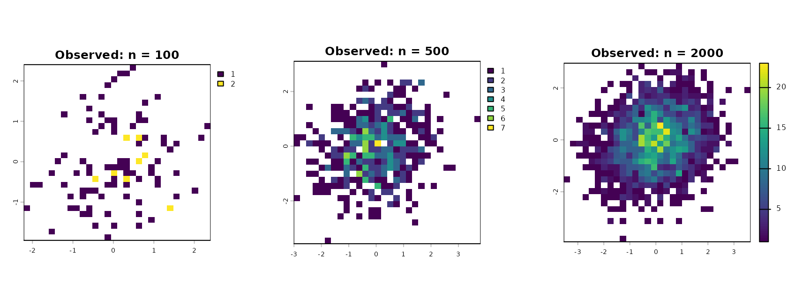
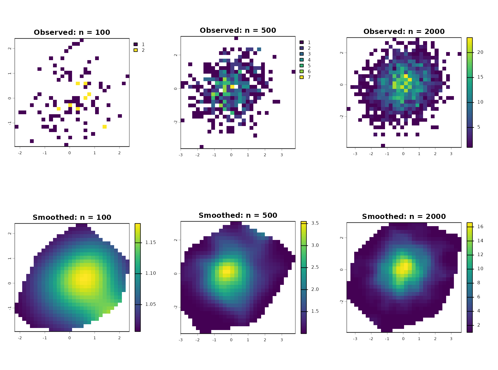
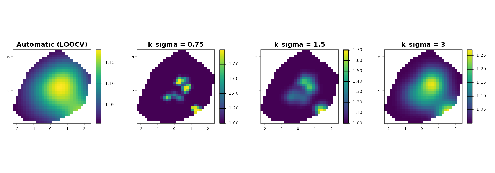
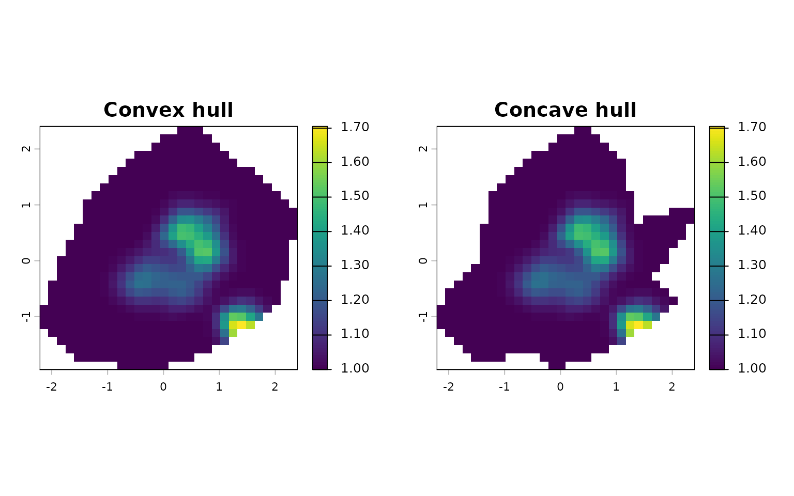
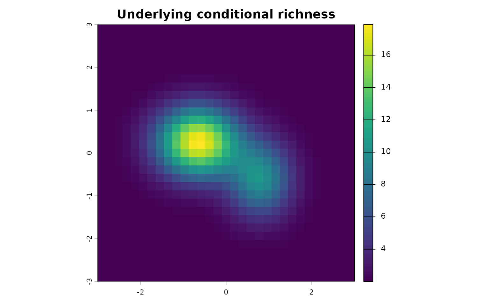
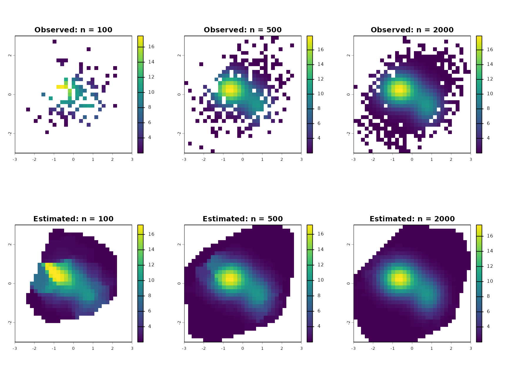

From incomplete environmental and attribute spaces to continuous estimates
Bruno Vilela
Source:vignettes/lets-smooth-theoretical-space.Rmd
lets-smooth-theoretical-space.RmdThe problem: observations cover only part of ecological space
Ecological data rarely provide a complete picture of the combinations of conditions or organismal attributes that could occur. Biodiversity is usually represented geographically, but many questions concern other coordinate systems. In environmental space, each axis can represent a climatic or habitat variable. In attribute space, axes represent species properties, such as body size, dispersal capacity, or functional traits. A raster cell in either representation identifies a combination of values, not a geographical location.
Even when observations are collected without deliberate bias, a finite sample covers only part of a continuous distribution. As a result, a raster constructed from sampled species or surveyed sites may contain many empty cells. This is especially relevant at local scales, where the number of sampled organisms, species, or sites may be small relative to the diversity of potentially represented combinations.
An empty cell has several possible interpretations. It may represent a condition that was not sampled, a combination that is rare, or a combination that is genuinely absent from the ecological system. These possibilities cannot be distinguished from the raster alone. Interpreting every empty cell as a biological zero risks confusing incomplete observation with ecological absence. Conversely, assuming that every empty cell should contain biodiversity can introduce unsupported predictions.
Theoretical and observed spaces
The theoretical space represents the set of possible combinations of variables within a multidimensional system. Its boundaries can be defined by the ranges of the selected axes, but also by the biological, environmental, and physical constraints that determine which combinations can actually exist. For example, in environmental space, the relationships among temperature, precipitation, and other climatic variables constrain the combinations that can occur under Earth’s physical and climatological processes. Similarly, in attribute space, evolutionary history, physiological limitations, and functional trade-offs constrain the combinations of traits that species can exhibit. Consequently, the theoretical space is not necessarily equivalent to the complete Cartesian product of the selected variables, since some combinations may be physically impossible, biologically unfeasible, or inaccessible under the conditions being considered.
The observed space, in contrast, corresponds to the subset of these combinations represented by the available data. Its extent and internal structure depend not only on the underlying distribution of environmental conditions or biological attributes, but also on sampling effort, spatial and temporal coverage, and the resolution used to discretize the space. Incomplete sampling may therefore produce a fragmented representation of an otherwise continuous distribution, particularly at local scales or when relatively few observations are available. Importantly, the absence of observations from a particular combination does not necessarily indicate that the combination is theoretically impossible or biologically unoccupied.
In practice, the full extent of the theoretical space is rarely known. One possible approximation is to define a rectangular domain from the observed ranges of the variables, thereby establishing an operational space within which unobserved combinations can be explored. However, this rectangular extent may simultaneously exclude feasible combinations beyond the observed ranges and include combinations that violate biological or environmental constraints. Kernel-based smoothing offers a complementary approach by estimating values between observed combinations, potentially recovering continuous patterns obscured by limited sampling. Combined with geometric boundaries, such as convex or concave hulls, this approach provides a practical means of approximating patterns within a potentially broader theoretical space, although it cannot independently identify its true biological or physical limits.
We begin by illustrating this problem using simulated species traits.
Independent samples of different sizes are drawn from the same
underlying multivariate distribution, demonstrating how the
representation of attribute space changes with sampling effort. We then
introduce lets.smooth() as an exploratory approach to
estimating continuous patterns from incomplete observations, examining
how kernel bandwidth and geometric constraints influence the resulting
representation of ecological space.
Required packages
This vignette uses the letsR package to construct and
explore environmental and attribute spaces, and the terra
package for raster manipulation and visualization.
Seeing the problem: finite samples in attribute space
A sample of trait values drawn from a continuous distribution is already incomplete relative to its underlying population distribution. There is no need to remove occupied cells artificially to demonstrate this property. Instead, we generate independent samples of 100, 500, and 2,000 hypothetical species from the same bivariate normal distribution. Each species has one pair of correlated traits, and all generated records are retained.
The sampling distribution is held constant, and sample size is the
only feature intentionally varied. A larger sample should generally
cover more combinations of traits and yield a less fragmented
discretized representation. Importantly, lets.attrpam()
counts the species assigned to each attribute-space bin. Its raw
richness values are consequently affected by the number of species
sampled, and the resulting rasters should not be interpreted as directly
comparable estimates of total richness at different sample sizes.
set.seed(1)
sample_sizes <- c(100L, 500L, 2000L)
simulate_traits <- function(n) {
trait_a <- rnorm(n)
trait_b <- 0.2 * trait_a + rnorm(n)
data.frame(
Species = paste0("sp", seq_len(n)),
trait_a = trait_a,
trait_b = trait_b
)
}
trait_samples <- lapply(sample_sizes, simulate_traits)
attr_spaces <- lapply(trait_samples, lets.attrpam, n_bins = 30)
richness_rasters <- lapply(attr_spaces, function(z) z$Attr_Richness_Raster)
op <- par(mfrow = c(1, 3), mar = c(3, 3, 3, 2))
for (i in seq_along(richness_rasters)) {
plot(richness_rasters[[i]],
main = paste("Observed: n =", sample_sizes[i]))
}
par(op)We can summarize how many attribute-space cells have recorded species in each sample:
attribute_coverage <- data.frame(
n_species = sample_sizes,
occupied_bins = vapply(
richness_rasters,
function(r) sum(!is.na(terra::values(r, mat = FALSE))),
integer(1)
)
)
attribute_coverage$proportion_occupied <-
attribute_coverage$occupied_bins / 30^2
print(attribute_coverage, row.names = FALSE)
#> n_species occupied_bins proportion_occupied
#> 100 92 0.1022222
#> 500 265 0.2944444
#> 2000 408 0.4533333The figures show the central difficulty: the same generating process can give rise to different observed attribute spaces simply because a different number of species is sampled. A gap between sampled bins cannot, on its own, establish a gap in the underlying trait distribution. The next step is to ask whether the observed values can support a provisional estimate between sampled combinations.
A possible solution: smoothing values with
lets.smooth()
lets.smooth() offers an exploratory way to estimate a
continuous raster response from observed cells. It uses Gaussian kernel
regression, optionally limiting the estimated surface to a convex or
concave hull around those cells. The method addresses gaps in the raster
response, not the detection of unrecorded species or the reconstruction
of the true bounds of ecological space.
How does lets.smooth() work?
The procedure is not restricted to species richness. It can be
applied to any continuous numerical variable represented in a raster,
including functional diversity, phylogenetic diversity, environmental
characteristics, or other ecological attributes. The function estimates
values across the underlying space based on the observed raster values,
regardless of the ecological meaning of the variable. Recorded zeros are
treated as observations, whereas NA values represent
unknown values.
For a target cell at position , the function calculates a Gaussian-weighted mean of observed raster values:
Here, is the observed value of the variable of interest in cell , which may represent species richness or any other numerical attribute stored in the raster. The term is the Euclidean distance between cells in the represented space, and is the bandwidth. The estimator is a form of Nadaraya-Watson kernel regression. It calculates a weighted mean, rather than a sum of observations or a probability density.
The bandwidth is specified relative to the raster resolution:
A smaller k_sigma gives more weight to nearby
observations and retains finer variation. A larger value produces
broader, smoother gradients. The implementation computes contributions
from all observed cells, avoiding the artificial absence of estimates
where a finite focal window contains no observations. This does not mean
that predictions far from observed cells are reliable.
By default, lets.smooth() uses
k_sigma = "auto". The bandwidth multiplier is selected by
leave-one-out cross-validation (LOOCV), which evaluates how well each
observed cell can be predicted from all the other observed cells. For a
candidate multiplier
,
the selection criterion is:
where
denotes the kernel estimate made without using the value of cell
.
The implementation evaluates 30 logarithmically spaced multipliers
between 0.25 and 10 and, when appropriate, refines the best candidate
numerically. If all observed raster values are identical, the
cross-validation criterion cannot distinguish bandwidths and the
function uses k_sigma = 1. An explicit numerical value,
such as k_sigma = 1.5, bypasses optimization. The
automatically selected multiplier is printed when the function runs, but
the function returns only the smoothed raster.
LOOCV minimizes prediction error among the observed cells, rather than error against the unknown theoretical distribution. The selected bandwidth may also reach the limits of the search interval. In particular, the presence of spatial dependence, irregular sampling intensity, and systematic differences between sampled and unsampled combinations can limit how well LOOCV performance transfers to unobserved regions.
Distances are calculated in the coordinate units of the raster. Environmental or trait variables with different units or markedly different variation should be transformed or standardized before constructing the space. Otherwise, one axis may dominate the distance calculation.
Where should predictions be retained?
The smoothing calculation can be performed over the entire raster
(restrict = FALSE) or restricted to a geometric hull
enclosing observed cells (restrict = TRUE). A convex hull
provides a broad interpolation domain, whereas a concave hull can follow
the arrangement of observations more closely. Both are geometric
assumptions rather than estimates of ecological feasibility. In
particular, a hull can include poorly supported combinations and a
concave hull can exclude plausible unsampled combinations.
Applying the solution to the sampled attribute spaces
We now apply lets.smooth() to the three richness rasters
shown above, without deleting observations or manually constructing
missing-value patterns. Cells without a recorded species are represented
as missing bins in the attribute-space raster. The default
k_sigma = "auto" selects a potentially different bandwidth
for each sample using LOOCV. This is appropriate when the goal is
prediction for each dataset, although it means differences between
smoothed surfaces reflect both the sampled data and the selected
bandwidth.
smoothed_rasters <- lapply(richness_rasters, function(r) {
lets.smooth(
x = r,
k_sigma = "auto",
restrict = TRUE,
type_hull = "convex"
)
})
#> Selected k_sigma (LOOCV): 4.6546
#> Selected k_sigma (LOOCV): 1.7102
#> Selected k_sigma (LOOCV): 1.0081
op <- par(mfrow = c(2, 3), mar = c(3, 3, 3, 2))
for (i in seq_along(richness_rasters)) {
plot(richness_rasters[[i]],
main = paste("Observed: n =", sample_sizes[i]))
}
for (i in seq_along(smoothed_rasters)) {
plot(smoothed_rasters[[i]],
main = paste("Smoothed: n =", sample_sizes[i]))
}
par(op)Smoothing produces continuous surfaces inside each selected hull, even when a relatively small sample occupies few raster cells. The messages above report the multipliers selected for the corresponding samples. The estimates are conditional on the recorded richness values and the selected bandwidth. They do not recover the unobserved identities of species, nor do they estimate how many additional species would appear if a sample of 100 species were increased to 2,000.
For a quick side-by-side display, plot_raster = TRUE
plots the original and smoothed rasters directly. The argument is
optional and does not change the estimated values.
lets.smooth(
richness_rasters[[2]],
k_sigma = "auto",
type_hull = "convex",
plot_raster = TRUE
)Sensitivity to the kernel bandwidth
For the smallest sample, the choice of bandwidth particularly influences the spatial spread of observations. We compare three user-defined multipliers with the LOOCV-selected result for the same data. This comparison separates the effect of smoothing choices from changes in the observations.
r_sparse <- richness_rasters[[1]]
bandwidths <- c(0.75, 1.5, 3)
estimates <- lapply(bandwidths, function(k) {
lets.smooth(
x = r_sparse,
k_sigma = k,
restrict = TRUE,
type_hull = "convex"
)
})
op <- par(mfrow = c(1, 4), mar = c(3, 3, 3, 2))
plot(smoothed_rasters[[1]], main = "Automatic (LOOCV)")
for (i in seq_along(estimates)) {
plot(estimates[[i]], main = paste("k_sigma =", bandwidths[i]))
}
par(op)Small bandwidths emphasize local variation, while large bandwidths distribute the influence of observed richness over a broader region. The LOOCV choice represents the best fit within the predefined search procedure for predicting observed cells. A smooth surface should not be confused with strong observational support. Where the sample is small, different bandwidths can yield markedly different results.
Exploring the hull assumption
A convex hull contains all observed cell centroids but may include combinations not represented by the sample. A concave hull can follow the sampled domain more closely, although its outline depends on a tuning parameter and may itself exclude plausible but unsampled combinations.
# Keep the bandwidth fixed to isolate the effect of hull geometry
r_convex <- lets.smooth(
x = r_sparse,
k_sigma = 1.5,
restrict = TRUE,
type_hull = "convex"
)
r_concave <- lets.smooth(
x = r_sparse,
k_sigma = 1.5,
restrict = TRUE,
type_hull = "concave_ratio",
param = 0.5
)
op <- par(mfrow = c(1, 2))
plot(r_convex, main = "Convex hull")
plot(r_concave, main = "Concave hull")
par(op)Changing the hull changes where predictions are retained, not their underlying Gaussian kernel estimates at cells shared by both domains, provided the bandwidth is held fixed. Neither hull establishes the true boundary of a functional or environmental hypervolume.
A second problem: limited environmental coverage in local surveys
The same distinction matters when cells represent environmental combinations rather than species traits. A relatively small survey may cover only a narrow subset of conditions available in a landscape, and environmental cells without surveys should not automatically be assigned a richness of zero. To examine when smoothing is informative, we can simulate an environmental response that is known everywhere and evaluate predictions at cells without survey observations.
Species counts per attribute-space bin increase mechanically with sample size. To investigate prediction error without this confounding effect, we consider a different simulation: a known continuous richness response in a fixed two-dimensional environmental space. We independently sample 100, 500, and 2,000 survey locations from the same bivariate normal distribution, and at each location we record the underlying richness response. No survey locations are deliberately discarded to create missingness. Only locations inside the predefined raster domain contribute to its cells. Multiple survey locations can fall into the same raster cell, so the number of cells containing an observation is usually smaller than the number of surveys.
Unlike the attribute example, the environmental raster boundaries and resolution remain identical across samples. Differences in the resulting coverage and smoothing therefore arise from sample size and random variation, rather than shifting bin widths.
r_template <- rast(
nrows = 31, ncols = 31,
xmin = -3, xmax = 3,
ymin = -3, ymax = 3,
crs = ""
)
xy <- terra::xyFromCell(r_template, seq_len(terra::ncell(r_template)))
# Hypothetical conditional richness as a continuous environmental response
richness_true <- 2 +
16 * exp(-((xy[, 1] + 0.65)^2 / (2 * 0.65^2) +
(xy[, 2] - 0.25)^2 / (2 * 0.55^2))) +
8 * exp(-((xy[, 1] - 0.8)^2 / (2 * 0.5^2) +
(xy[, 2] + 0.6)^2 / (2 * 0.6^2)))
r_truth <- rast(r_template)
terra::values(r_truth) <- richness_true
plot(r_truth, main = "Underlying conditional richness")
The sampling locations follow a correlated bivariate normal distribution concentrated toward the center of the environmental domain. This naturally produces fewer observations in the tails, as expected when only a limited number of environmental combinations is represented by field surveys.
set.seed(123)
simulate_sites <- function(n) {
a <- rnorm(n)
b <- 0.35 * a + sqrt(1 - 0.35^2) * rnorm(n)
cbind(a, b)
}
survey_samples <- lapply(sample_sizes, simulate_sites)
# Each sampled environmental combination reveals its true response
observed_environmental <- lapply(survey_samples, function(sites) {
ids <- unique(terra::cellFromXY(r_template, sites))
ids <- ids[!is.na(ids)]
v <- rep(NA_real_, terra::ncell(r_template))
v[ids] <- richness_true[ids]
out <- rast(r_template)
terra::values(out) <- v
out
})
estimated_environmental <- lapply(observed_environmental, function(r) {
lets.smooth(
x = r,
k_sigma = "auto",
restrict = TRUE,
type_hull = "convex"
)
})
#> Selected k_sigma (LOOCV): 0.8683
#> Selected k_sigma (LOOCV): 0.6651
#> Selected k_sigma (LOOCV): 0.5303
op <- par(mfrow = c(2, 3), mar = c(3, 3, 3, 2))
for (i in seq_along(sample_sizes)) {
plot(observed_environmental[[i]],
main = paste("Observed: n =", sample_sizes[i]))
}
for (i in seq_along(sample_sizes)) {
plot(estimated_environmental[[i]],
main = paste("Estimated: n =", sample_sizes[i]))
}
par(op)Assessing prediction error across sample sizes
Because the simulation defines the underlying richness response for the entire raster, we can quantify prediction error at cells not represented by the corresponding sample. Predictions are restricted to the hull of the observed cells, so we report both the fraction of unsurveyed cells covered by that hull and prediction error within it. This evaluation uses a known simulated response and is independent of the LOOCV error used to select the bandwidth, because it measures error in cells without observed values.
assess_estimate <- function(observed, predicted, truth) {
v_obs <- terra::values(observed, mat = FALSE)
v_pred <- terra::values(predicted, mat = FALSE)
v_true <- terra::values(truth, mat = FALSE)
unsurveyed <- is.na(v_obs)
evaluated <- unsurveyed & is.finite(v_pred)
data.frame(
surveyed_cells = sum(!unsurveyed),
prediction_coverage = mean(is.finite(v_pred[unsurveyed])),
RMSE = if (any(evaluated)) {
sqrt(mean((v_pred[evaluated] - v_true[evaluated])^2))
} else NA_real_,
MAE = if (any(evaluated)) {
mean(abs(v_pred[evaluated] - v_true[evaluated]))
} else NA_real_
)
}
assessment <- do.call(rbind, Map(
assess_estimate, observed_environmental,
estimated_environmental,
MoreArgs = list(truth = r_truth)
))
assessment <- cbind(n_surveys = sample_sizes, assessment)
print(assessment, row.names = FALSE, digits = 3)
#> n_surveys surveyed_cells prediction_coverage RMSE MAE
#> 100 88 0.403 1.640 0.8310
#> 500 271 0.623 0.572 0.2296
#> 2000 474 0.561 0.156 0.0731This experiment illustrates how the representation of a theoretical environmental space changes as more locations are sampled. Even with a correct smooth-response assumption, increasing sample size does not guarantee monotonic improvement in every error statistic for independent random samples. Prediction coverage can also expand toward parts of the environmental space that have little support, particularly when a convex hull is used.
For empirical studies, the unobserved conditional response is unknown. The automatic LOOCV procedure is useful for selecting bandwidths without specifying an arbitrary multiplier, but it is not an independent assessment of accuracy in unsampled regions. Spatial dependence, environmental clustering, and non-random sampling can make prediction errors in observed cells systematically different from those in unsampled combinations. Where data permit, independent validation or more structured cross-validation may be needed.
What the estimates can and cannot tell us
The distinction between an unsampled combination and true absence is
essential. In the attribute-space example, empty bins arise naturally
from finite samples of species drawn from a continuous distribution. In
the environmental example, NA identifies a cell for which
no simulated survey was conducted. The smoother treats NA
as an unknown value to be estimated, whereas a recorded zero remains a
valid observation of zero. These situations should not be
interchanged.
For a local assemblage survey, for example, an environmental cell may be missing simply because no site with those conditions was surveyed. Smoothing can generate a hypothesis about richness at similar environmental combinations. In attribute space, however, a cell with no sampled species is not necessarily an unknown richness observation: it may be an observed zero relative to the sampled assemblage. Smoothing such an attribute-space raster describes a continuous pattern among the sampled species, but does not estimate how many missing species from the wider species pool occupy those combinations.
The method estimates variation in the response across a selected coordinate system. Automatic bandwidth optimization does not reconstruct geographic occupancy, correct sampling effort, or infer missing species identities. Cells close in environmental space may be geographically distant, and geographically adjacent sites may occupy very different parts of environmental space.
Conclusions
Environmental and attribute spaces allow biodiversity patterns to be
examined beyond geographical coordinates. A finite sample of organisms
or sites provides only a partial representation of their underlying
distributions, particularly in local-scale studies. By generating
independent samples of 100, 500, and 2,000 observations, the examples
show how sampling intensity alone can influence the apparent continuity
of the represented space. lets.smooth() provides a
straightforward way to explore how recorded richness or other attributes
might vary between sampled combinations.
Its principal contribution is to make a distinction explicit: the fragmented space we observe is not necessarily the complete space occupied by the ecological system. Kernel smoothing offers a provisional description of this unobserved structure, conditional on the selected coordinate system, bandwidth, and hull used to delimit the interpolation domain. The default LOOCV bandwidth offers a data-driven alternative to a fixed smoothing parameter, but does not eliminate uncertainty about unsampled combinations. The approach should be considered a tool for exploration and hypothesis generation, with predictive claims requiring independent evaluation.
References
Hutchinson, G. E. (1957). Concluding remarks. Cold Spring Harbor Symposia on Quantitative Biology, 22, 415–427. https://doi.org/10.1101/SQB.1957.022.01.039
Nadaraya, E. A. (1964). On estimating regression. Theory of Probability and Its Applications, 9, 141–142.
Watson, G. S. (1964). Smooth regression analysis. Sankhyā: The Indian Journal of Statistics, Series A, 26, 359–372.